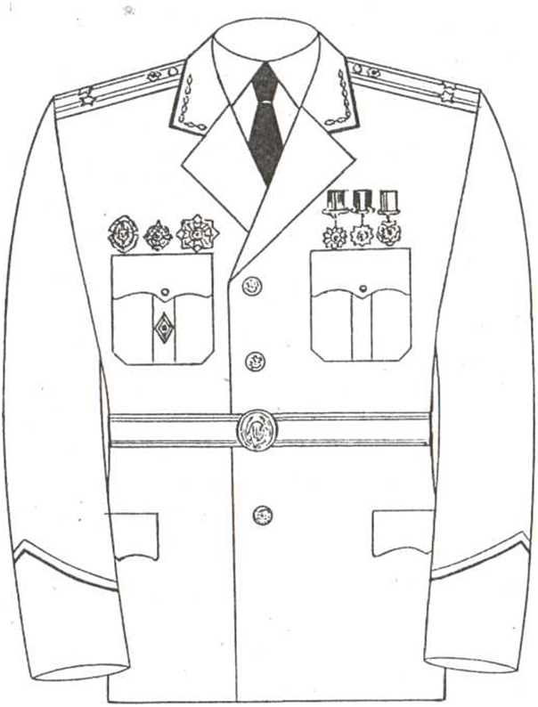
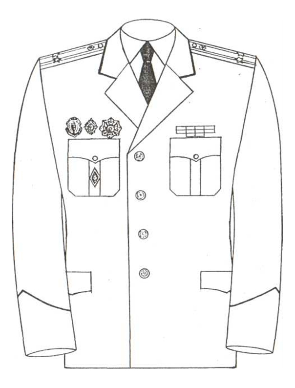
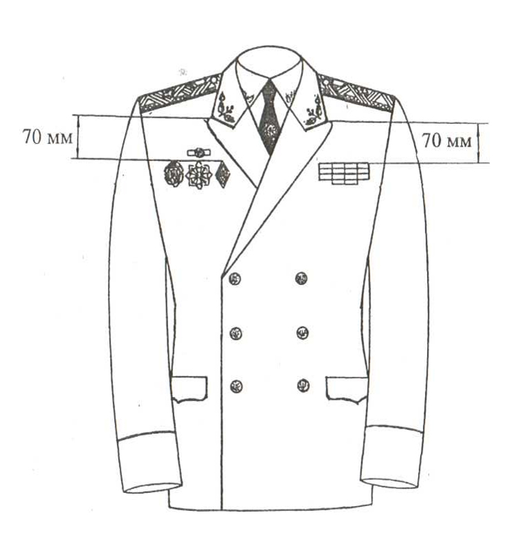

Розміщення нагород на мундирі
Носіння орденів, медалей, орденських стрічок і стрічок медалей на планках та інших відзнак на формі одягу.
Носіння орденів і медалей України або стрічок медалей на планках, військових і нагрудних знаків МВС України на форменому одязі є обов'язковим.
Особи, що мають звання генералів внутрішньої служби України, при парадно-вихідній формі одягу носять на галстуці відзнаку генерала внутрішньої служби України — "Зірка генерала армії України".
При парадно-вихідній формі одягу на мундирі носяться ордени, медалі, особливі відзнаки (рис. 10, 11).
Згідно з чинними нормативно-правовими актами (Закон України "Про державні нагороди України", накази МВС України про заснування відомчих премій та відзнак) нагороди розміщуються в такому порядку:
1.4.1. З лівого боку грудей по центру:
- державні нагороди України;
- нагороди колишнього СРСР (крім орденів, що кріпляться за допомогою штифта, наприклад, орден Червоної Зірки);
- державні нагороди інших країн;
- відомчі заохочувальні відзнаки, що мають форму медалей (у першу чергу МВС України, потім – інших центральних органів виконавчої влади, яким надано право засновувати відзнаки у формі медалей);
- нагороди громадських організацій (за бажанням, згідно зі статутом).
1.4.2. З правого боку грудей послідовно у три ряди відповідно до їх значущості:
- у верхньому ряду розміщується знак до почесного звання України;
- у середньому ряду розміщуються зліва направо від лацкана тільки відзнаки МВС України "Хрест Слави" та "Закон і честь";
- у нижньому ряду також зліва направо від лацкана в такому порядку розміщуються:
- нагрудний Почесний знак МВС України;
- нагрудний знак "За відзнаку в службі" І ступеня;
- нагрудний знак "За відзнаку в службі" IIступеня;
- нагрудний знак "Кращому працівникові пожежної охорони";
- Почесний знак ГУБОЗ МВС України;
- нагрудний знак "За бездоганну службу";
- знак "За заслуги у боротьбі з економічною злочинністю".
У разі наявності цих нагород знак про закінчення навчального закладу на двобортному мундирі (кітелі) генералів носиться перед цими нагородами в нижньому ряду.
Після затвердження інших нагрудних знаків місце їх розташування буде визначено окремим наказом МВС України.
1.5. При повсякденній формі одягу замість орденів і медалей носять
орденські стрічки та стрічки медалей на планках, а також особливі відзнаки й інші нагрудні знаки (значки) (рис. 12, 13).
Одночасне носіння орденських стрічок, стрічок медалей та нагрудних знаків на планках і самих нагород не допускається.
1.6. Орденські стрічки і стрічки медалей на планках носять з лівого боку грудей, так щоб:
- на двобортному кітелі генералів, а також на повсякденному кітелі жінок верхній край верхнього ряду стрічок знаходився на 70 мм нижче рівня кута лацкана;
- на однобортному кітелі (куртці літній) осіб начальницького та рядового складу органів внутрішніх справ, що мають спеціальні звання міліції, осіб начальницького складу, що мають спеціальні звання внутрішньої служби, нижній край нижнього ряду стрічок розміщується впритул до верхнього краю клапана нагрудної кишені.
При носінні двох і більше орденських стрічок та стрічок медалей на планках вони закріплюються в один ряд на загальній планці справа наліво, але не більше чотирьох. Стрічки, які не вміщуються на одній планці, переносяться на другу тощо й прикріплюються нижче першої.
1.7. Стрічки орденів, медалей, відомчих відзнак на колодках розміщуються в такому порядку:
- державні нагороди України;
- нагороди колишнього СРСР;
- державні нагороди інших країн;
- відомчі відзнаки ("Хрест Слави", "Закон і честь", "Почесний знак МВС України", "За міжнародне співробітництво у правоохоронній діяльності", "За відзнаку в службі" І ступеня; "За відзнаку в службі" IIступеня, "За розвиток освіти, науки і техніки", "10 років МВС України", "Кращому працівникові пожежної охорони", Почесний знак ГУБОЗ МВС України, "За бездоганну службу";
- нагороди громадських організацій (за бажанням);
- знак " Учасник ліквідації наслідків аварії на ЧАЄС";
- пам'ятні знаки та медалі, що не є державними нагородами.
1.8. Нагрудний знак про закінчення відомчого навчального закладу на мундирі (кітелі) жінок кріпиться з правого боку грудей на 70 мм нижче рівня кута лацкана.
Нагрудний знак про закінчення відомчого навчального закладу на мундирі (кітелі) осіб начальницького та рядового складу органів внутрішніх справ, що мають спеціальні звання міліції, осіб начальницького складу, що мають спеціальні звання внутрішньої служби, носять по центру складки правої нагрудної кишені. У разі наявності нагрудних знаків двох і більше відомчих навчальних закладів носять тільки один нагрудний знак, що є вищим за значенням.
Нагрудний знак про закінчення цивільного вищого навчального закладу (університет, інститут) дозволяється носити у разі відсутності нагрудного знака про закінчення вищого навчального закладу МВС України на його місці.
1.9. Нагрудний знак депутатів усіх рівнів носиться у верхньому куті лацкана з лівого боку грудей.
1.10. Знак "За поранення" носиться на мундирі (кітелі) з правого боку грудей на 10 мм вище орденів і медалей, а у разі відсутності орденів і медалей - на їх місці.
Рис 10

Рис 11

Рис12
